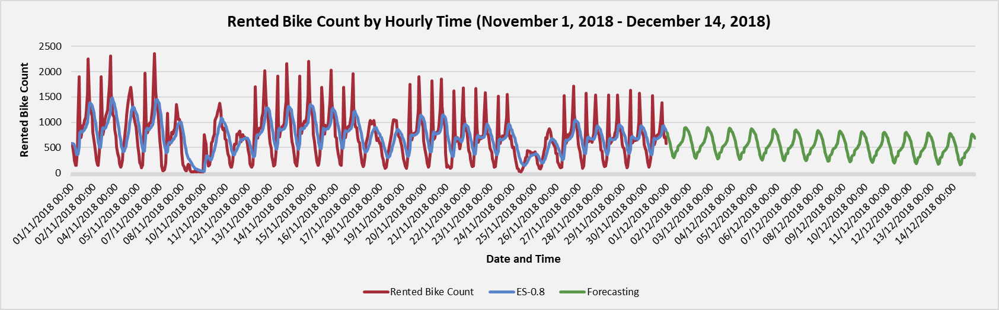
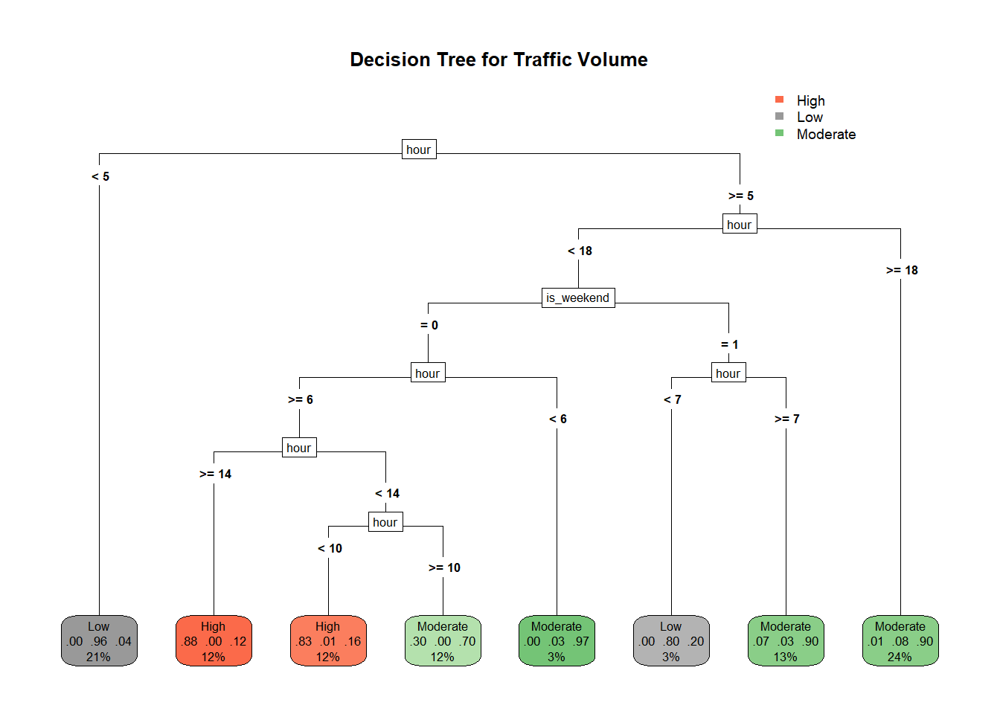

Brandon Carine
Data Analytics Student · SAIT · Calgary, AB
LinkedIn ·
GitHub
Data Analytics Portfolio
A selection of end-to-end data projects completed in Excel and R, showcasing data cleaning,
visualization, and insights communication.
Bike Sharing – Seoul (Excel)


End-to-end Excel analysis of Seoul’s bike-sharing demand, applying data cleaning, multiple linear regression,
K-Means clustering, and time-series forecasting to predict rental trends and support business decisions.
Download the Excel workbook
Twin Cities Traffic – Minneapolis–St. Paul (R/Quarto HTML)


R/Quarto analysis of Minneapolis–St. Paul traffic data, following the CRISP-DM framework to perform data preparation,
regression, clustering, and decision tree modeling for predictive insights.
Open the live report
View source on GitHub
Last updated: October 2025
All logos and icons were generated with the assistance of ChatGPT for this portfolio.